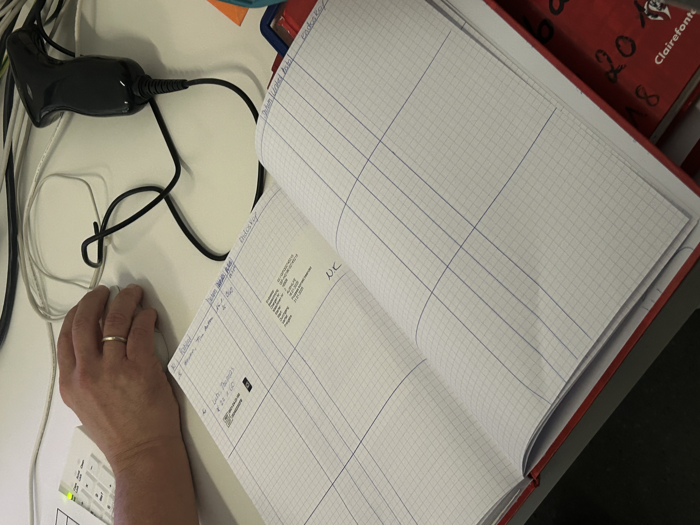
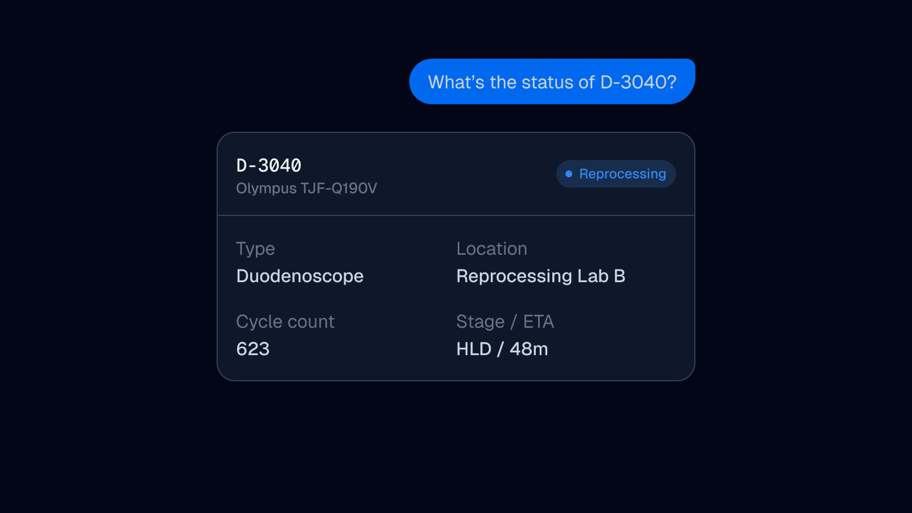
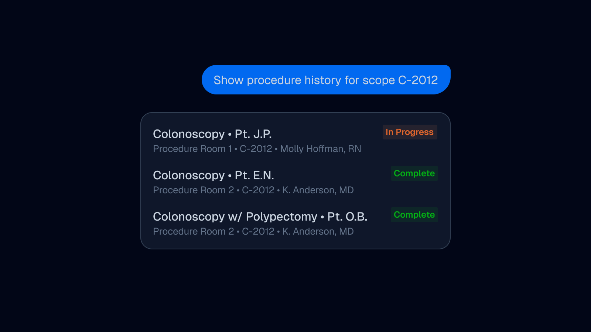
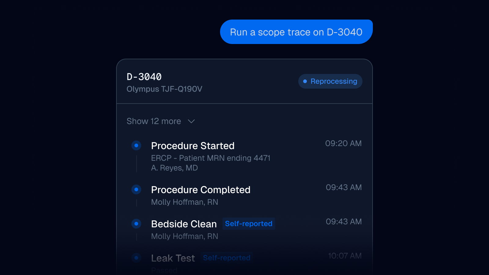

Case study / Endo AI
Reducing clinical complexity through Agentic UI
At Olympus I led design and built the prototype for Endo AI, an embedded AI assistant for a clinical SaaS platform, built with a cross-functional pod to cut the time nurses spend hunting for information.
Quick Info
Background
A few things to know before diving in.
1
The gap
Reprocessing and chain-of-custody data for medical scopes is only useful if it can be retrieved instantly, in plain language, under time pressure.
2
The constraint left open
The initial release of Olympus' clinical SaaS platform, Olysense, deliberately left AI out of scope, for privacy and infrastructure reasons, but the roadmap always pointed toward a natural-language layer.
3
The premise
A few weeks from wide release, our product director pulled together a four-person pod (design, research, PM, engineering) to figure out how that layer took shape.
4
The approach
Rather than theorize, I designed and hand-built a working prototype myself, so every decision could be pressure-tested against a real implementation, not just a spec.
The situation

For a nurse, every question is really a search for reassurance
A head nurse doesn't think of "what scopes are available" as a database query. They're really asking one thing, over and over: am I about to have a problem in the next twenty minutes?
The problem I set out to solve
How might we utilze AI to reduce complexity and free time for healthcare workers to focus on patient care?
The task
Design the interaction model for an agent that's useful everywhere and trusted immediately
The constraints
1 - Privacy
The agent's context could never contain patient identifiers directly, only de-identified references resolved by the client's own permissions layer, never by the model.
2 - Proactive behavior
Proactive behavior (the agent volunteering information unprompted) is a bigger liability than answering on demand, and means running checks continuously instead of once per question. It had to be allowlisted to a short, pre-approved set of conditions.
3 - Imperfect data
Real-world reprocessing documentation has genuine gaps, so status needed a real confidence model (system-confirmed, implied, self-reported, missing), not a flat checkmark.
4 - Flexibility
The agent had to be able to handle a wide range of questions, from simple status checks to complex chain-of-custody queries.
The action
A small set of purpose-built components, each mapped to a decision

One flexible chat surface didn't hold up. Instead, I designed a small registry of components, each mapped to a specific moment of nurse decision-making: a status card for "can I proceed now," a trace timeline for "can I prove what happened," an options card for a scheduling conflict. Restraint was the design language: no card tried to do more than one job.
Keeping patient identity out of the model took two passes. The output side was designed in from the offsite: the agent's context never receives patient identifiers. The input side surfaced later, during dogfooding, when a nurse typed a real patient's name straight into the chat box, treated as a real incident, not a minor bug. The fix: typed patient references resolve to an internal reference before a request leaves the client, with a visible chip confirming what was sent. Our privacy lead still opens every review by asking if we checked the free-text path.
Widgets in the system



Dealing with imperfect data
An assets status has real, nameable structure
Using a partner clinic's data, we found that 12% of scope location fields were stale by the time a nurse checked them. This led us to design a four-tier system for reprocessing status: system-confirmed, reasonably implied, self-reported, or genuinely missing.

The result
A working prototype: real interface, real database, real generated reports
I was able to build a working prototype that leveraged data from a partner clinic's database. This allowed us to quickly test our work against real data with real healthcare practitioners and real-world scenarioes.
Product development has evolved. Rapid prototyping allowsed us to move fast and test our assumptions quickly. I spent very little time in Figma and designed in code.
Outcome
This started as a design question and shipped to a real beta
We released a refined beta MVP with three of our partner clinics. The adoption was slow at first but saw a significant spike as nurses became more comfortable with the interaction model. In tandem we saw a significant reduction in the time spent on the legacy process - nurses spent less time navigating the app for answers and more time querying EndoAI.